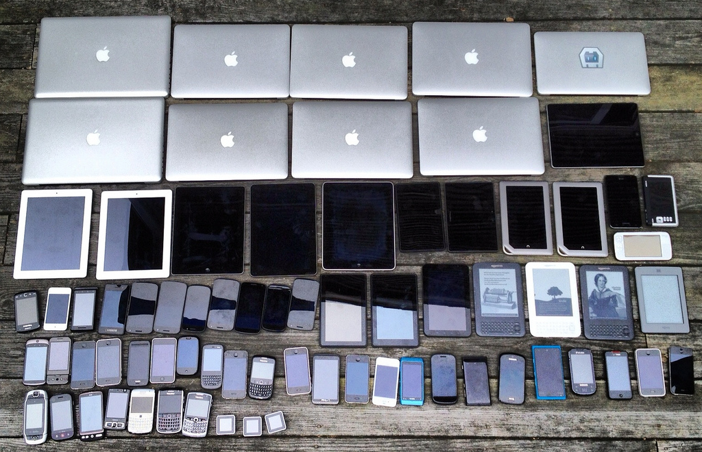

Flexible Layout
플렉스박스로 할 수 있는것들?
Created by UIT개발실 / MinKyoungHwan
이 발표자료는 크롬브라우저/1280*800 해상도에 최적화 되있습니다

#speaker {
Name : 민경환 대리
Team : UIT 개발실
E-mail : kyounghwan.min@nhn.com
Project : 네이버 포스트, 스마트에디터, 'webkit 사전' 서적 집필중
}
#speaker:description {
content : '만나서 반가워요 :)’
}
레이아웃을 만든다는것은?
- 3단 레이아웃에 가운데 정렬로 해주세요. 네이버 메인처럼...
- 푸터는 항상 하단에 고정시켜주시구요
- 좌측 메뉴의 너비값은 20%인데 해상도가 1000px이상이면
200px로 고정시켜주세요. - ...
CSS 2.1
- Grid Layout
- float:left; position:absolute;
- display:inline-block; display:table-cell;
- JavaScript
- ...

다양한 환경에 최적화 되는 UI
- 모바일에선 박스가 좌측, 태블릿에선 우측 상단에 붙어야해요...
- 텍스트 길이에 맞춰 박스가 늘어날 순 없을까요?
- 성능최적화 좀 해주시구요...
- ...
혁신적인 UI
- 단순하면서 임팩트 있고 좀 고급스러워보였으면 좋겠어요...
- 웹표준, 웹접근성은 기본인거 아시죠?
- ...
레이아웃은 더 다양한 환경에 최적화되야 한다
레이아웃이 좀더 유연할 순 없을까?
CSS3.0 플렉스박스는
새로운 개념의 레이아웃을 제공합니다

2009/07/23display:box
2011/03/22
2011/11/29
2012/03/22display:flexbox
2012/06/12display:flex
2012/09/18
2014/03/25

페이지 레이아웃을 플렉스박스로 만드는건 안좋을 수 있다
플렉스박스 장점 3가지
- Available space
- Alignment
- Order

Available space
활용할 수 있는 공간을 자동으로 계산합니다

Alignment
요소들의 정렬을 손쉽게 설정할 수 있습니다

Order
요소들의 배치 순서를 정할 수 있습니다
display:flex
1
2
3
플렉스박스는 컨테이너 태그와 아이템 태그로 나뉩니다
<ul>
<li>I'm First</li>
<li>I'm Second</li>
<li>I'm Third</li>
<li>I'm Fourth</li>
</ul>
ul{}추천 사이트
CSS Trick : http://css-tricks.com/snippets/css/a-guide-to-flexbox/
Stephen Hay : http://www.slideshare.net/stephenhay/flexbox-one-giant-leap-for-web-layout-brea-2013
1. 내비게이션
<ul>
<li>intro</li>
<li>business</li>
<li>project</li>
<li>contact us</li>
</ul>
ul{}2. 채팅창
<div class="wrap">
<ol class="code_sample3">
<li>first!</li>
<li>second!</li>
<li>third!</li>
</ol>
<form class="type_area">
<input placeholder="Type your message here" size="50">
<button>submit</button>
</form>
</div>
div{}3. 접힘/펼침메뉴
<div>
<article>flex menu</article>
<ul class="nav">
<li>1depth
<ul>
<li>menu 1-1</li>
<li>menu 1-2</li>
<li>menu 1-3</li>
</ul>
</li>
<li>2depth
<ul>
<li>menu 2-1</li>
<li>menu 2-2</li>
<li>menu 2-3</li>
</ul>
</li>
<li>3depth
<ul>
<li>I am menu 3-1</li>
<li>I am menu 3-2</li>
<li>I am menu 3-3</li>
</ul>
</li>
</ul>
</div>
div{}4. 페이지 레이아웃
<div class="wrap">
<header>1. header</header>
<div>
<article>2. main</article>
<nav>3. nav</nav>
<aside>4. aside</aside>
</div>
<footer>5. footer</footer>
</section>
.wrap{}5. 데이터 테이블 소팅
플렉스박스를 더욱 풍부하게 쓰려면?
flex-wrap:wrap
flex-wrap:nowrap
A
B
C
D
flex-wrap:wrap
一
二
三
四
flex-wrap:wrap-reverse
四
三
二
一

Masonry layout?
Usually say "Pinterest layout"
1
2
3
4
5
6
7
8
9
10
11
12
13
14
15
16
17
18
19
20
21
22
23
24
25
26
27
28
.flexbox{}
취할것은 취하고 버릴것은 버리자